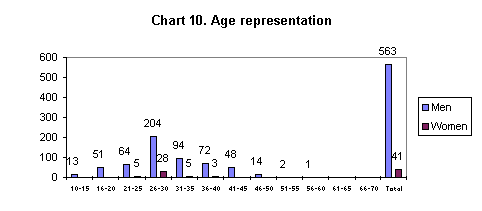
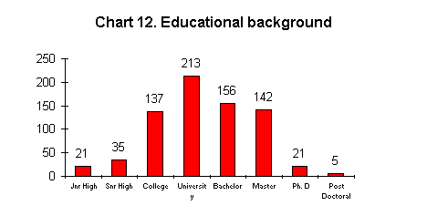
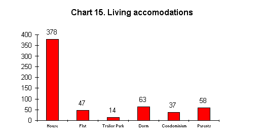
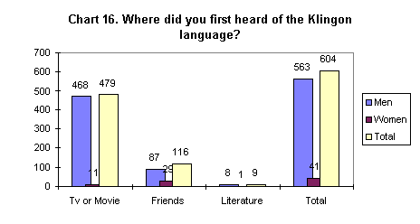
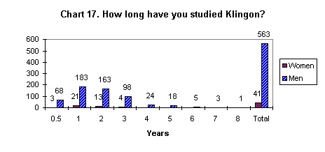
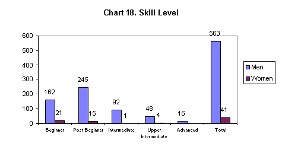
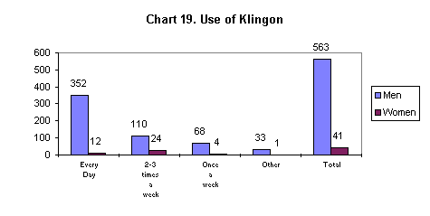
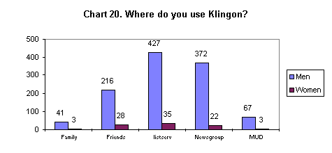

Klingon Questionnaire
INTRODUCTION
This survey would not have been possible without the help from all the mebers of the KLI. Thank you all...
With the help of this survey published on the Internet, I hoped to be able to give a description of the "average" Klingon speaker. I have, since I began study this language, been interested in finding out what kinds of people that take on the challenge of learning a new, strange and "alien"language. What social class, gender, ethnic group, education and job they have. Also where they use this language, is there any other place than the Internet to use this language?
When studying the results of any survey, one has to observe and consider the validity and reliability of the survey results. There are a number of factors that decreases the validity of this survey. The first thing one has to take into consideration is that the survey was only available via the Internet. This means that the survey was not available to those without connection to the Internet. I am not aware of how many there are without any connection to the Internet, however, at present over 60 million people have access to the Internet, according to a Swedish magazine "Internet World issue 2/96". Something else that must be taken into consideration is that not all of those that have access to the Internet are interested in the Klingon language.
I hoped that I would receive somewhere around 1000 replies. I received just over 600. The reason that I was hoping for 1000 was that there are about a 1000 members of the KLI, the Klingon Language Institute. (http://www.kli.org/). 524 indicated that they were a member of some Klingon organization.
The main guide to learning Klingon is The Klingon Dictionary, TKD, published by Simon and Schuster, and according to them there are over 250.000 copies of TKD in print. This could mean that there are 250.000 potential Klingon speakers all over the world. Those of us that study Klingon know for a fact that it is not possible that there are 250.000 Klingon speakers. This is based on the fact that many of the "real" Klingon speakers have more than one copy of TKD. I, myself, have three copies. And just because one owns a copy of TKD does not mean that you are a Klingon language student. The book and the cassettes may only be kept because they look impressive on the bookshelf and that they may impress friends.
When it comes to the question about reliability, I have no way of knowing if the replies are true. I have only written them down as they arrived to my e-mail address. An observant reader of this survey will notice on some of the questions that the added result will be larger than possible 604, which is the total number of participants in the survey. This is because some of the questions were multiple choice and it was possible to answer with more than one choice.
Finally, the replies that I did not include in the results are not of any value to me but I have to be aware of their existence. I am talking about the people that are trying to be funny. The first reply was from a Vulcan, 400 years old, never been on earth, speaks Klingon, Ferengi, Romulan and Vulcan. Another answer was from Worf and the last one was from Captain Picard (both are TNG characters.)
SURVEY AND RESULTS
From this point on I will show the results from my questionnaire that was published on the Internet between January 1996 and April 1996.
Klick here to have a look at the questionnaire as it appeared on the Internet
Please note that the chart numbers are not correct.
Question 1.
The purpose was to find out the gender of those that replied. I received 604 replies, of those 563 were male and only 41 were female. An interesting observation; why are there so few women? I think that the main reason is that Star Trek TNG is a science fiction series and as such its main target group is men. Another reason could be that the Internet is so far a predominantly male world. And access and knowledge to the Internet are vital to the study of Klingon.
Question 2.
There was only one (1) reply from an African-American male. All the others were from Caucasian males and females respectively.
Question 3.
One thing worth noticing is that the women were all between the ages of 21-35 as can be seen in the chart below.

Question 4.
The majority, in fact 512 out of the 604, were from somewhere in the continental USA. The remaining 92 replies were from the countries represented below. The women were mainly from USA. However, two of them were from Canada and one from England and New Zealand respectively.
Chart 11. The number of Klingon speakers in different countries.
|
Number of replies |
512 |
13 |
11 |
7 |
6 |
4 |
3 |
2 |
1 |
|
Countries represented |
USA |
Canada |
England |
Germany |
Australia |
Holland |
Denmark |
Belgium |
Brazil |
|
New Zealand |
Ireland |
Finland |
Croatia |
||||||
|
Italy |
France |
Egypt |
|||||||
|
Greece |
Estonia |
||||||||
|
Japan |
Hong-Kong |
||||||||
|
Luxembourg |
Iceland |
||||||||
|
Norway |
India |
||||||||
|
Russia |
Israel |
||||||||
|
Sweden |
Korea |
||||||||
|
Taiwan |
Lithuania |
||||||||
|
Mongolia |
|||||||||
|
Poland |
|||||||||
|
Singapore |
|||||||||
|
South Africa |
|||||||||
|
Spain |
|||||||||
|
Switzerland |
|||||||||
|
Turkey |
|||||||||
|
Uzbekistan |
Question 5.
I thought that education would be an important question in this survey.

As we can see in the chart above over one third of the replies came from people that have at some point attended university. A strange thing is that only 35 have finished high school. The low numbers in Junior and Senior high must be explained by the validity that I explained in the general disclaimer, that is that people who replied to the survey did not bother to fill in that they had gone to high school, they took it for granted. Someone that attends college and university must have graduated from high school. The African-American is one of the 21 informants in the Ph.D. criteria. A more likely reason for this was pointed out to me by Mark Mandel, thank you very much, and that is the mistake I made when constructing the Questionnaire. When looking at the educational background question one can see that I asked for only one answer. Still many of those that answered the Questionnaire managed to check more than one box.
These numbers are somewhat confusing. They cannot be added together, for the simple reason that, if we take a look at one of the post doctoral for example: one of them checked every box, meaning that he finished high school and attended university and took his masters degree, went on to take a Ph.D. to end up with a post doctoral degree. This is also one of the questions that many did not bother to answer properly. For example; many only replied that they had a Bachelors Degree or a Masters Degree, they did not check the box that indicated that they had in fact also attended university.
Question 6 and 7.
English is the native language that is spoken by most of the participants in this survey. Other native and shared languages are represented below.
Chart 13. Language representation.
|
Arabic |
German |
Persian |
|
Armenia |
Greek |
Polish |
|
ASL |
Hakka |
Portuguese |
|
Azerbajian |
Hebrew |
Russian |
|
Bulgarian |
Icelandic |
Sanskrit |
|
Cantonese |
Indonesian |
Scottish |
|
Chinese |
Italian |
Spanish |
|
Comanche |
Japanese |
Swahili |
|
Czech |
Korean |
Swedish |
|
Danish |
Latin |
Taiwanese |
|
Dutch |
Lojban |
Turkish |
|
Esperanto |
Mikmak |
Uzbekian |
|
Finnish |
Mongolian |
Welsh |
|
Flemish |
Navaho |
Yiddish |
|
French |
Norwegian |
There were also some other languages as well, for example two of Tolkien's languages, Elfish and Dwarf. There were a number of variants of languages as well, for example six variants of Russian. The number of languages spoken by individuals were related to the length of the education. Those who spoke more than their native language and an additional language had more than 3 years of college or university education behind them.
Question 8.
The informants were all employed with some exceptions. 462 were employed and 162 were unemployed. The informants that were unemployed were students, between the ages of 10 to 25. There were some in the group 26-30 that were unemployed as well. Very few were unemployed in the older age categories. Only one of the women was unemployed.
Question 9.
The amount of replies in this question are too many to mention. I had not anticipated that there would be such a great variation of occupations. Below is short list with the top 10 most popular occupations.
The most unusual job was dog trainer.
Chart 14. Occupation and the number of workers in each category.
|
Computer related |
68 |
|
Linguist |
31 |
|
Lecturer |
23 |
|
Engineer |
21 |
|
Librarian |
15 |
|
Teacher |
14 |
|
Communications |
8 |
|
Lab assistant |
5 |
|
Civil Servant |
3 |
Question 10 and 11.
Most of those that had a job at the time of the survey also had a different job before that. 563 people at one time or another had a job of some sort. Income seems to be a delicate subject. It was an optional question. An interesting comparison could have been to compare the difference in wages between, for instance, USA and Sweden. But that is not the purpose with the survey. Too few answered this question to get any reliable numbers from them, although this should not stop me from making a generalization of how much people make. According to Jennifer Coates there kinds of conclusions with this little material. She draws the conclusion, from a study made in Reading, that the entire town's population of young people speak a certain way from a sample of 23 young men and women.
Question 12.
The most popular way of living is living in a house. This question is related to education and age. The young people all lived in a dorm or at their parent's house. The older people, all without some exceptions, lived in a single family house. Surprisingly many lived in trailer parks and they were all from USA.

That concludes the general section of my survey. From now on all the questions will be regarding the Klingon language.
Question 13.

The chart above represents where those that replied first heard of the Klingon language. These numbers are worth commenting on. I noticed that there were a connection between some of the results in the tables. The majority of the women heard about it from friends; only 25% of the women first heard of it through TV or a movie. An overwhelming 75% heard about it from friends. These results further strengthen my beliefs concerning what I said in the beginning about Star Trek being a male oriented TV series. Something else that I also found to be interesting was that those that had studied the language longest all heard about it from literature.
Question 14.
The question where and how you learned Klingon gave me too many replies to make sense in charts. The results would be confusing if I put them in a chart since they were allowed to answer with more than one alternative. I will therefore write about them instead.
TKD seems to be the source that almost everyone used. All but eight used TKD in their studies. Even in this question one can see a relation to other questions. For instance those that has studied the language for the longest time, a long time is considered five years or more, are the only ones that claim to have learned Klingon through movies or television. The KLC were the second most popular source used in the learning process; 419 people used the KLC. David Barron's Klingon Language Postal Course (KLPC), is apparently a good way of learning Klingon. 177 of the replies mentioned that they had used the services of David Barron. There were a few other sources as well; the Interstellar Language School (ILS), was mentioned by 29 survey participants and Other was mentioned by two. Unfortunately they did not mention what other sources they had studied.
Question 15.
This question concerns the length of the time that people have studied the Klingon language.

A few things are worth mentioning in relation to this , those that indicated that they have spoken Klingon for more that five years were also the ones that spoke more other languages than the other participants in the survey. One of the replies came from a male in his 40's. He spoke 16 languages. He had also spoken Klingon for seven years.
Question 16.
This question is concerns the self-rated skill level of the Klingon speaker.

This table follows the table with the study-length.
Question 17,18 and 19.
The Internet is the main media in which people use Klingon. The two main places on the Internet are the Klingon listserv and the Klingon newsgroup. It should be mentioned that there are other places on the Internet as well as "off" the Internet where Klingon is spoken. My survey was published only on the Klingon listserv and the Klingon newsgroup. The following charts show how often the informants use Klingon and on what occasions and with whom they speak it.

The reason there are so many could be explained with the use of the Klingon listserv. The listserv is like a magazine to which you can subscribe. The subscriber can write with a question to the listserv and the listserv sends the question, via e-mail, to everyone that subscribes to the listserv. The listserv sends out the e-mails two or three times every day. The act of downloading the e-mails to a computer and reading the e-mails might be considered by some as every day use. 
Chart 20 above is also confusing, because of the fact that people were allowed to answer with more than one alternative. The results should be read as they are, out of a maximum 563 for men and 41 for women. MUD, Multi User Dungeon, is a place where Klingon speakers can talk, via the keyboard, to other Klingon speakers in real-time.
Question 20.
Reading and writing skills seems to be one of the things that people concentrate on. 574 out of the 604 informants could read and write Klingon. All of the women reported that they could read and write Klingon.
Question 21.
The KLI sponsors certain projects such as the Klingon Restoration Project, bible translation and other projects. Surprisingly few were involved in these projects. 21 of the replies indicated that they were involved in any of the projects.
Question 22.
I believed that almost everyone would be a member of some Klingon organization, whether the KLI or KAG or something else. From the results I could see that 524 were members of one of the above mentioned organizations.
Question 23.
The Klingon speakers whom I received replies from are not that keen on attending Klingon meetings. I must confess that I am not aware of how many gatherings there are every year. I do know that there is one special meeting called qep'a' which is held every year. 38 people indicated that they attend meetings. It was only the Klingon speakers with long experience that attended meetings and none of the women attended meetings.
Question 24.
The final question was included in the survey to find out if there were any other languages that were made from TV, and to find out if anyone spoke them. There were only six that spoke other artificial languages. Ferengi and Vulcan were the two languages represented.
That concludes my Survey on the Klingon speakers, if you have any questions please feel free to e-mail me by klicking here